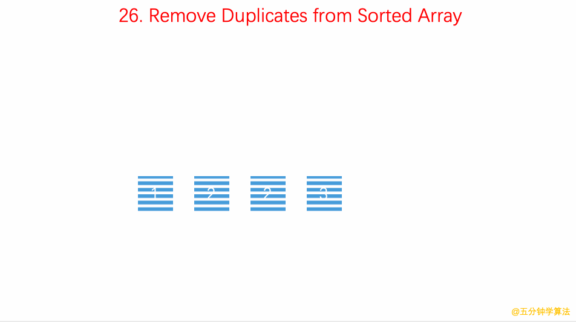

Question: 26.remove-duplicates-from-sorted-array
Given a sorted array nums, remove the duplicates in-place such that each element appear only once and return the new
length.
Do not allocate extra space for another array, you must do this by modifying the input array in-place with O(1) extra
memory.
Example 1:
Given nums = [1,1,2],
Your function should return length = 2, with the first two elements of nums being 1 and 2 respectively.
It doesn't matter what you leave beyond the returned length. Example 2:
Given nums = [0,0,1,1,1,2,2,3,3,4],
Your function should return length = 5, with the first five elements of nums being modified to 0, 1, 2, 3, and 4
respectively.
It doesn't matter what values are set beyond the returned length. Clarification:
Confused why the returned value is an integer but your answer is an array?
Note that the input array is passed in by reference, which means modification to the input array will be known to the
caller as well.
Internally you can think of this:
// nums is passed in by reference. (i.e., without making a copy)
int len = removeDuplicates(nums);
// any modification to nums in your function would be known by the caller.
// using the length returned by your function, it prints the first len elements.
for (int i = 0; i < len; i++) { print(nums[i]); }
Resources:
https://github.com/azl397985856/leetcode/blob/master/problems/26.remove-duplicates-from-sorted-array.md
solution in JAVA: click
Key Points
双指针这道题如果不要求，O(n)的时间复杂度， O(1)的空间复杂度的话，会很简单。 但是这道题是要求的，这种题的思路一般都是采用双指针
如果是数据是无序的，就不可以用这种方式了，从这里也可以看出排序在算法中的基础性和重要性。
GIF

(gif： https://github.com/MisterBooo/LeetCodeAnimation)
Solution in JS
var removeDuplicates = function(nums) {
const size = nums.length;
let slowP = 0;
for (let fastP = 0; fastP < size; fastP++) {
if (nums[fastP] !== nums[slowP]) {
slowP++;
nums[slowP] = nums[fastP]
}
}
return slowP + 1;
};
// Using Set (ES6)
var removeDuplicates = function(nums) {
let set = new Set(nums);
let setArr = [...set];
return setArr;
};